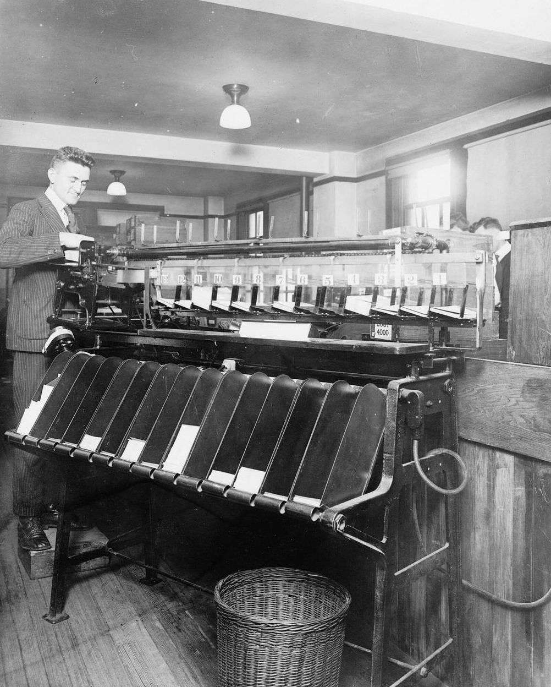

−87%
AI-агент для Jira
фарма-SaaS
Менеджери створюють задачі й звіти про ризики звичайною мовою. Прості команди виконує код, аналітику робить AI, тому на операціях запису 0% галюцинацій. У пілоті 10–15 людей.
Я автоматизую ручну роботу в HR- і рекрутингових агенціях, малому бізнесі та у ФОП. Агенти на n8n і Make роблять рутину, а рішення лишаються за вашими людьми.

90%працівників почали користуватися ERP на 10 000+ людей, яку я впроваджував
Шість сповіщень, і кожне забирає години щотижня. Торкніться кожного.
9:14
Понеділок
0год/тиждень повернено
Усе під контролем. Ви повернули 23 години на тиждень. Два рішення чекають на вас.
10:00
Оберіть, хто ви, і подивіться, що зміниться.
HR і рекрутинг
Кандидати, листи, договори
Кандидати живуть у трьох таблицях і поштіОдна база кандидатів, синхронізована з поштою й ATS
Рекрутери вручну пишуть кожному кандидатуПідтвердження й нагадування йдуть за шаблонами, рекрутер лише перевіряє
Запис на співбесіду забирає п'ять листів туди й назадКандидат сам обирає час, нагадування приходять автоматично
Договори й документи збирають у WordДокумент формується з даних кандидата за хвилину, людина перевіряє й підписує
Малий і середній бізнес
Заявки, рахунки, звіти
Заявки з сайту й пошти гублятьсяКожна заявка в CRM, менеджер одразу отримує сповіщення
Рахунки виставляють вручну після кожного замовленняРахунок формується й надсилається сам, бухгалтерія отримує копію
Звіт для власника збирають з кількох системЗвіт оновлюється сам щоранку
Однакові відповіді клієнтам по 20 разів на деньAI готує відповіді на типові питання, складні передає людині
ФОП / JDG
Месенджери, запис, бухгалтер
Клієнти пишуть у трьох месенджерахУсі звернення в одному місці з нагадуваннями
Рахунки й нагадування про оплату щомісяця вручнуРахунки й нагадування йдуть самі
Запис клієнтів через перепискуКлієнт сам бронює час, нагадування автоматичні
Документи для бухгалтера збираєте в останній деньДокументи щомісяця самі складаються в папку для бухгалтера
Наведіть або торкніться свого типу команди. Зліва як зараз, справа після автоматизації.
Три кроки, хвилина часу. На виході схема, години й повідомлення, яке ви отримували б щоранку.
Хто ви?
Що у вас робиться вручну? Торкніться кроків.
0год/тиждень ручної роботи
0год/тиждень повертається
0рішень лишаються за людьми
Оберіть процеси й налаштуйте повзунки. Цифри орієнтовні, точні покаже аудит.
Що у вас робиться вручну (год/тиждень на людину)

0 złручна робота коштує вам на рік
0 złможна повернути щомісяця
0 год із 40
0 годзвільняється щомісяця
0 годповертається кожному щотижня
Формула: люди × години × 4,33 тижня × вартість години. Оцінка без аудиту, тож реальні цифри можуть відрізнятися.
Отримаєте розрахунок і 3 процеси, з яких я б почав. Відповідаю особисто.
14:00
Я вірю, що в еру AI люди стають важливішими, ніж до цього. Тому я автоматизую рутину, а людей лишаю там, де вони найсильніші: у рішеннях, стосунках і роботі з клієнтами.
Агенти переносять дані, пишуть чернетки й нагадують. Усе, що стосується грошей і людей, затверджує людина. Цей крок я називаю Human Gate.
Автоматизую те, що люди самі називають рутиною. Тому автоматизаціями потім користуються.
Після пілоту ви бачите цифри: скільки годин повернулося і скільки людей справді користуються.
Я не беру проєкти, мета яких скоротити людей.


П'ять років я впроваджую CRM, ERP і AI-інструменти в компаніях і бачу одну картину: технологія працює, а люди її обходять і повертаються в Excel. Найчастіше людей просто не спитали.
На впровадженні ERP для 10 000+ користувачів ми перенесли 600–800 тис. рядків даних без критичних втрат. Але вирішили 9–10 сесій навчання і ключові люди в кожному відділі: системою почали користуватися 90% працівників.
Так само я працюю з AI. Агент для Jira, який я запустив як Product Owner, зменшив витрати на AI на 87%, а в пілоті ним користуються 10–15 людей. Сьогодні я будую автоматизації на n8n і Make, AI-агентів і RAG-асистентів.
Я вірю, що в еру AI люди стають важливішими, ніж до цього.
П'ять років я впроваджую CRM, ERP і AI-інструменти в компаніях і бачу одну й ту саму картину: технологія працює, а люди її обходять і повертаються в Excel. Проблема рідко в інструменті. Найчастіше людей просто не спитали.
На впровадженні ERP для 10 000+ користувачів ми перенесли 600–800 тис. рядків HR- і фінансових даних без критичних втрат і закрили проєкт на 1,5–2 місяці раніше плану. Але вирішило інше: 9–10 сесій навчання і ключові люди в кожному відділі. Системою почали користуватися 90% працівників.
Так само я працюю з AI. Як Product Owner запустив AI-агента для Jira: менеджери керують задачами звичайною мовою, у пілоті 10–15 людей. Гібридна архітектура зменшила витрати на AI на 87% і дала 0% галюцинацій на операціях запису. Будую автоматизації на n8n і Make, AI-агентів і RAG-асистентів. На міжнародному AI-хакатоні наша команда посіла 2-ге місце серед 70+ команд.
Мій принцип: рутину — агентам, рішення — людям. Прямо про інструменти, дбайливо з людьми.
Зараз допомагаю агенціям, компаніям і підприємцям автоматизувати рутину без звільнень: спершу слухаю команду, потім автоматизую те, що вона сама назвала рутиною, навчаю й міряю результат у повернених годинах.
Проєкти, нагороди й навчання
−87%
фарма-SaaS
Менеджери створюють задачі й звіти про ризики звичайною мовою. Прості команди виконує код, аналітику робить AI, тому на операціях запису 0% галюцинацій. У пілоті 10–15 людей.
90%
HR-tech
600–800 тис. рядків HR- і фінансових даних без критичних втрат. Звіт для правління замість 4–5 годин готується за 5–10 хвилин. Проєкт закрили на 1,5–2 місяці раніше плану.
1 місяць
HR-агенція
П'ять відділів перейшли з таблиць в одну систему. Через місяць жоден відділ не повернувся до Excel.
30 stories
бренд детективних ігор
Telegram-бот збирає бриф, AI пише контент-план і генерує фони. З одного брифу виходить 30 готових Instagram Stories, витрати на API нульові.
«Михайло переклав нашу роботу з кандидатами з трьох таблиць в одну систему. Рекрутери перестали переносити дані вручну і щотижня мають на кілька годин більше на розмови з кандидатами.»
Ім'я, власниця рекрутингової агенції, Познань
«Заявки з сайту тепер одразу потрапляють у CRM, а менеджер отримує сповіщення. Ми перестали губити клієнтів у пошті.»
Ім'я, директор сервісної компанії на 25 людей
«Рахунки й нагадування клієнтам тепер ідуть самі. Я нарешті займаюся роботою, а не паперами.»
Ім'я, ФОП, Варшава
17:00
Так я впроваджую автоматизації. Чотири кроки, а терміни фіксуємо після консультації, коли зрозуміло, які процеси й системи у вас.
МихайлоХаос зліва, порядок справа. Жовтий квадрат — Human Gate: там агент зупиняється й чекає на людину.

Точка у флоу, де агент зупиняється й чекає на людину. Агент готує, людина вирішує.
Агенти працюють уночі, а о 8:00 ви отримуєте одне повідомлення.
Ранковий агентTelegram · приклад повідомлення
Доброго ранку. За вихідні: 34 нові кандидати в базі, 12 підтвердили співбесіди, звіт для клієнта надіслано.
Два рішення чекають на вас.
Ціна на сайті одна: консультація. Решту називаю після неї й фіксую до початку робіт.
Розбираємо ваш процес, і я чесно кажу, чи окупиться автоматизація. Сума зараховується у впровадження.
Для компаній: карта процесів, години по кожному, пріоритети й план.
Вартість після консультаціїПочинаємо з пілоту на одному процесі. Ціну етапу фіксуємо до початку робіт.
Фіксована ціна етапуСлідкую, щоб нічого не зламалося, і додаю нові сценарії.
Формат обираємо разомЗаписатися на консультацію30 хв · 190 zł · зараховується у впровадження
Ні. Я автоматизую рутину: перенесення даних, нагадування, чернетки, звіти. Рішення про гроші й людей ухвалюють люди, а в команди з'являється час на роботу, яку цінують клієнти. Проєкти, мета яких скоротити людей, я не беру.
Консультація коштує 190 zł за 30 хвилин і зараховується у впровадження. Вартість аудиту й впровадження залежить від процесів і систем, тож я називаю її після консультації, і вона фіксована до початку робіт. Найменші проєкти впровадження починаються приблизно від 2 000 zł.
Так, якщо рутина забирає у вас хоча б кілька годин на тиждень: рахунки, переписка, запис клієнтів, документи. На консультації скажу, що можна автоматизувати швидко й недорого.
Працюю відповідно до GDPR. Використовую моделі з обробкою даних в ЄС, які не навчаються на ваших даних. n8n можна розгорнути на вашому сервері. Доступи видаєте ви й можете відкликати будь-коли.
Автоматизую операційну частину: листи кандидатам, запис, документи, синхронізацію систем. Якщо AI допомагає оцінювати кандидатів, рішення завжди ухвалює рекрутер, а вимоги закону перевіряємо разом до запуску.
Флоу задокументовані й належать вам. На супроводі я стежу за змінами в системах і оновлюю інтеграції заздалегідь.
Ні. Ви отримуєте документацію й навчання. Прості зміни команда зможе робити сама.
Залежить від процесу й систем. Терміни етапу фіксуємо після консультації.
Польською, українською та англійською. Працюю дистанційно по Польщі та ЄС.
HubSpot, Google Workspace, Jira і Confluence, PowerBI, n8n, Make, Claude, OpenAI, Gemini та будь-які системи з API. Нові оцінюю на консультації.
30 хвилин, щоб зрозуміти, скільки часу можна повернути.
Записатися на консультацію30 хвилин, щоб зрозуміти, скільки часу можна повернути.
Надішліть цей текст на kontakt@mlohaza.com або скопіюйте його. Я підтверджу час і надішлю посилання на оплату та Google Meet. Підготуйте один процес, який забирає найбільше часу.